1.报名某赛事后，该赛事活动页面的“报名”按钮将自动转变为“我的参赛作品”按钮，点击该按钮进入该赛事下个人主页，可通过点击流程阶段中“创建作品”按钮或“个人主页”右侧按钮（按钮名称不定，由赛事管理员设置）两种方式中的任意一种，来创建作品信息。
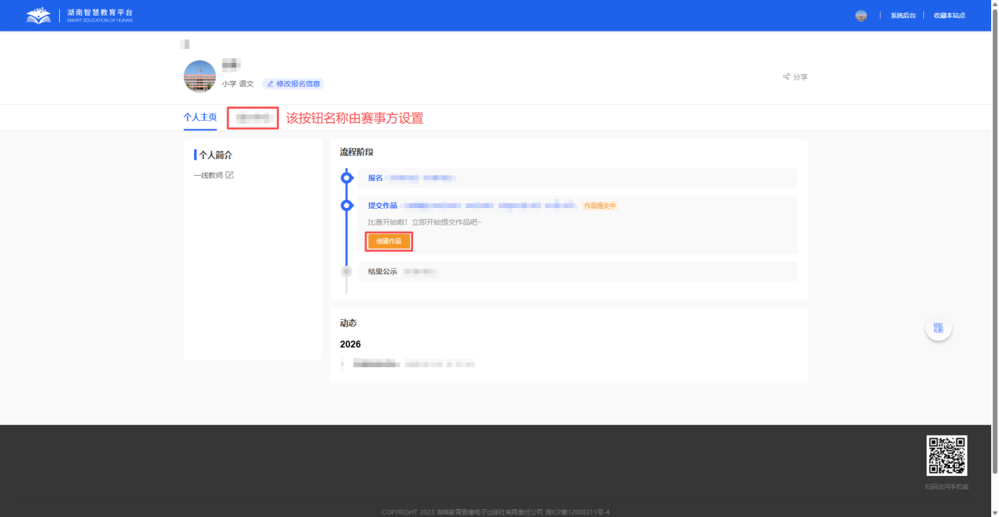
输入作品名称及相关信息后，点击“保存”即可。
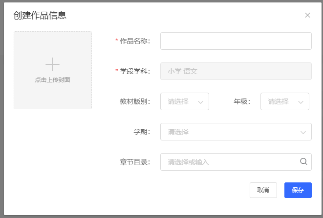
赛事阶段将展示在“个人主页”按钮右侧，如为多阶段赛事，流程展示上略有区别。
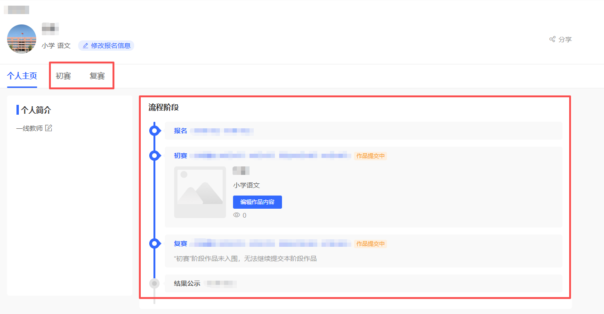
2.创建作品信息后，个人主页“创建作品”按钮自动变为“编辑作品内容”按钮，接下来依然可通过上述两种方式中任意一种方式，进一步提交作品。
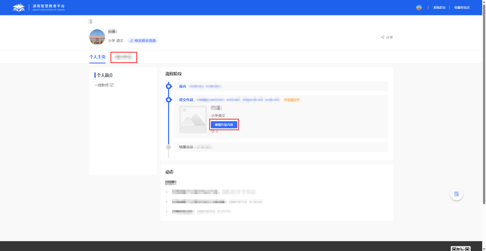
3.跳转提交作品页面，此处会根据工作室赛事管理员的设置，展示需提交的作品内容。为三种模式：文档模式、分栏模式、附件模式。
文档模式为在线文档编辑（可导入本地文档和引用）；分栏模式为分模块填充内容，包括在线编辑和上传本地文件；
附件模式为上传本地文件。以下依次为文档、分栏、附件模式。
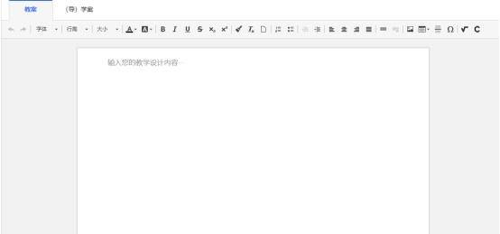
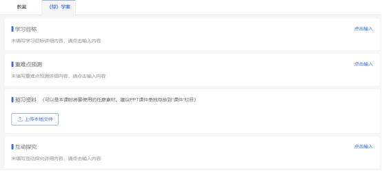
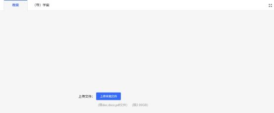
以附件模式为例，点击需提交内容右侧的“编辑”按钮，即可看到“上传本地文件”按钮，点击后上传即可（请留意支持的文件格式）。
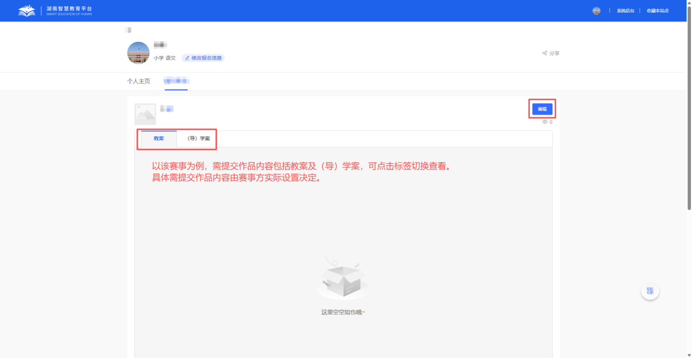
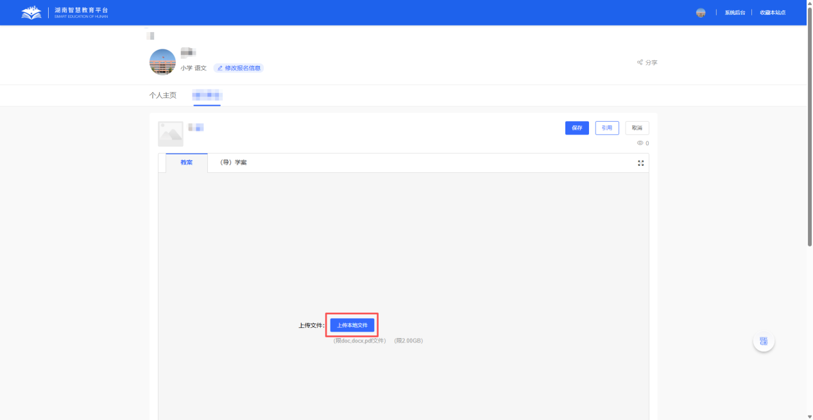
4.上传后点击“保存”，即上传生效。
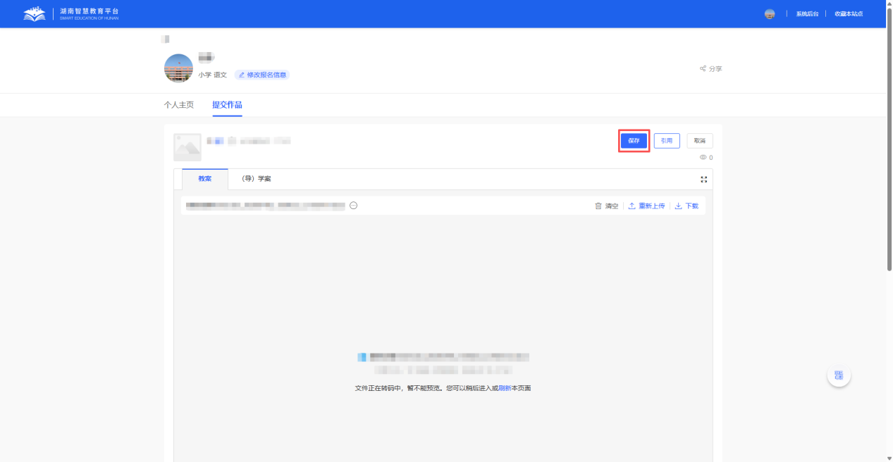
5.如需引用现有教学资源，可点击右侧“引用”按钮，在弹出窗口中选择对应引用资源，点击下侧“引用”保存。
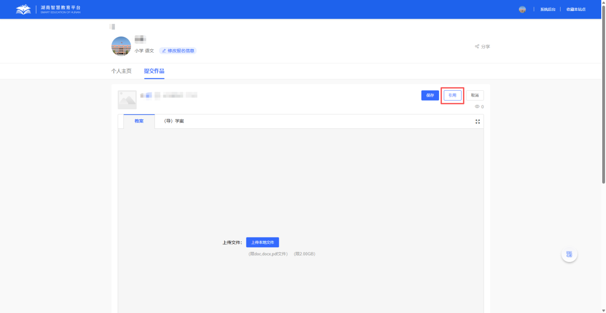
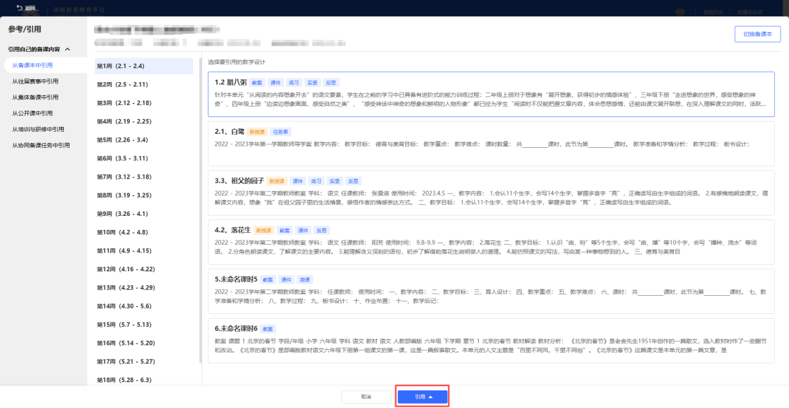
6.已提交内容可在“我的参赛作品”页面进行预览、删除、重新上传、下载，同时在该页面也可编辑报名信息。
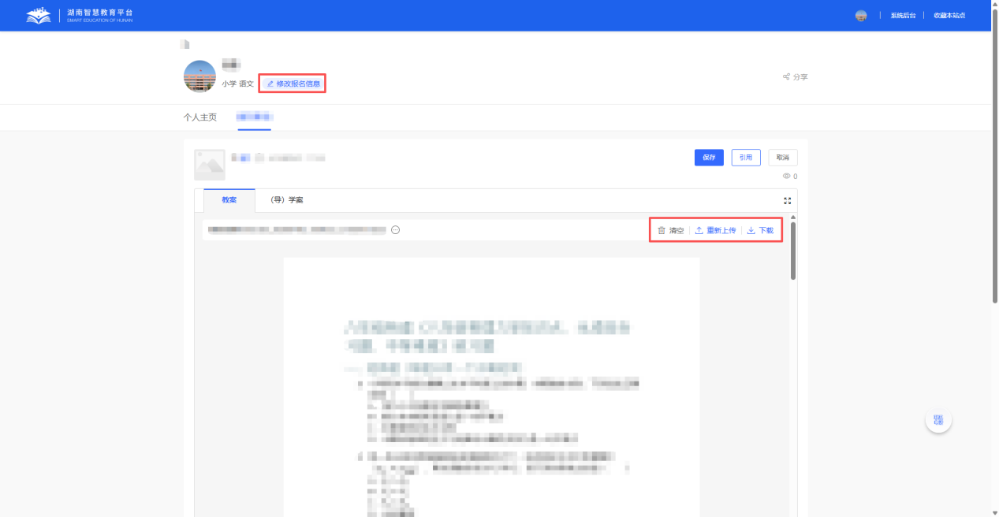